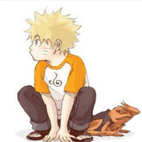
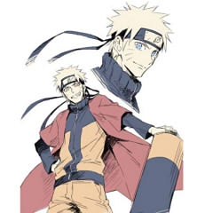
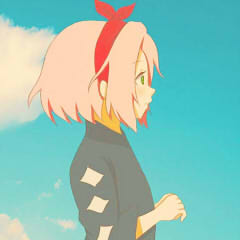
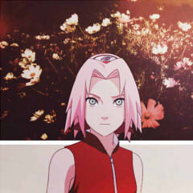

漩涡鸣人是四代火影波风水门和第二代九尾人柱力漩涡玖辛奈的儿子。
naruto
玖辛奈预产时，因为女性人柱力在怀孕期间封印会减弱，于是三代火影
将产房布置在村外，并由严密的结界和众多暗部保护，同时水门也陪护在侧，确保封印不被解开。


玖辛奈有惊无险地生下鸣人，水门为此高兴地流泪，但一个自称为“宇智波斑”神秘“面具男”突然现身，
用卑鄙的手段强迫水门带着救下来的鸣人用飞雷神离开玖辛奈身边，而玖辛奈的封印尚未修复。
“斑”用写轮眼控制九尾冲破封印并将尾兽抽出，随即操纵九尾攻击玖辛奈，玖辛奈被水门救下。
水门将极度虚弱的玖辛奈带回家安顿好，naruto便急赴木叶与“斑”交战并击退了他。
玖辛奈用查克拉锁链勉强将九尾捆住并制造出结界，但却因身体已经达到极限而吐血，并准备用仅存的查克拉跟九尾同归于尽。
最终水门做出了自己的选择：牺牲自己的生命，由自己来封印九尾，
并将九尾阳查克拉以及自己和玖辛奈最后的查克拉一并封印在鸣人身上，
让夫妻俩都能够在鸣人体内伴着鸣人成长，并设定封印程序使他们能在最关键最危急的两个关头给予鸣人帮助。
小樱童年时，因为大家都叫她'宽额头’，所以小樱感到很自卑，
也常用长长的浏海盖住额头，以免被别人拿来取笑。
只有山中井野不取笑小樱，反而送她一条缎带，让小樱以可爱的姿态、向其他友人展示其额头。

aaa
bbb
ccc
